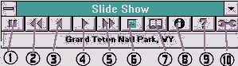
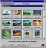
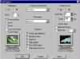

|
|
| 当前位置：电脑报电子版 > 1999 年 > 40 期 > 软件世界 > 多功能图片展示器——Slide Show |
| 《 多功能图片展示器——Slide Show 》 |
| 如果你想方便地展示自己收藏的图片作品；如果你希望经常方便地变换自己的桌面图案和屏幕保护图片；如果你希望将自己收藏的图片作品制作成自动化的桌面背景或屏幕保护程序，现在不妨来用用Second Nature software公司的Slide Show软件。
软件的安装 该软件下载网址是www.secondnature.com，下载的原始软件包为一个大约15M的自解压程序，安装时首先将所有安装文件解压到一个临时目录“C:\2NTEMP”，然后自动执行该目录下的安装文件“INSTALL”进行安装；如果你不指定别的安装目录名，软件会自动在安装盘根目录下建立名为“SLIDESHW”的目录，并且将其附带的图片目录建立在该目录下。如果安装时使用默认的设置，安装完成后，它会自动在你的Windows的开始菜单启动组里安家落户，并且每天开机后为你的桌面更新花样。花样图片都来自它自带的图片目录SLIDESHE\IMAGES\NEW COLLECTOIN中。软件功能 该软件支持自带的图片格式为SNX格式，占用的空间较小（每个屏幕大小的图片文件大约占用40KB磁盘空间），另外，它还支持BMP和JPG两种常用格式的图片文件。软件运行后的面孔（如图1）主要为一工具条。其表示的功能从左到右依次为：1暂停2快进3前一图片4下一图片5快倒6选择不同图片集中的图片7有关作品的更多信息8软件老家信息9帮助信息10系统配置。 软件使用 图片浏览展示按动按钮6进入图片集选择对话窗口，从上端的选择窗口选择不同图片集，马上在屏幕上将选中的图片目录中的图片以缩略图的形式亮相。这时可以用鼠标单击选择图片，然后按“确定”按钮，或者双击鼠标左键，在桌面中展示你选中的图片。你也可以屏蔽掉图集中的一些图片，方法是在你不想要的某一图片上单击右键，在弹出的对话窗口中选择Don't show this image选择项即可，这时你选中的图片上出现一个大大的×号。 图片集的创建 由于程序自带的图片集是有限的（一般只有一个New Collection目录），所以一般不能令用户尽兴。这时用户可以用自己收集的图片做成图片集。由于本程序支持BMP和JPG图片格式，这就为用户制作自己的图片集创造了便利条件。只要用一些图片格式转换工具软件把自己的图片转换为以上两种格式之一，然后分类放入自己命名的目录下（不一定要拷贝到本软件的目录内，硬盘其它目录下也可）。 然后进行图片集的关联设置。按动按钮6进入图片集选择设置对话窗口（图2），点取下方的“Creat Collection”按钮，进入目录选择对话框，选择你建立好的图片材料目录，然后按动“Creat”按钮，片刻后图片集的建立宣告完成。之后，你就可以按上面的介绍展示你的图片了。如果你想把建立的图片集作为当前的图片集，请选择窗口上部的“Active”选择框，同时把原系统默认的图片集的“Active”选择框关掉。 桌面背景设置 按动工具栏的最后一个按钮10（即配置按钮），启动配置窗口（如图3）。窗口共分三栏，左面的一栏即为背景墙纸设置。要使背景设置生效，首先要将上面的墙纸功能开关打到“On”上，下面的部分是设置墙纸自动变换的周期，从每天一次、数小时一次，或者干脆不变；选择框是用来改变循环变化的周期的，单位是小时，有效范围是1～60，可以用上下移动箭头进行选择，也可以直接在小窗口输入数据；单击最下面的显示器可以立即改变当前所用的墙纸图片。也许你的图片有大有小，你设置的显示分辨率也有高有低，图片显示出来可能不美观，这没有关系，你可以选择中间“Placement”栏中的“Best Fit”项，它可以将你的图片缩放到最接近屏幕的大小；另外，还有平铺(Tiled)和原图(No stretching)两种位置供你按需选择。这里讲述的位置设置同样应用于屏幕保护图片的位置设置。 屏幕保护设置  按动配置按钮10，启动配置窗口，窗口的右边一栏为设置屏幕保护(图3)。将上端的功能开关拨到“On”位置，则屏幕保护功能生效；接下来的选择窗口是选择自动启动屏幕保护程序的时间，单位是分钟，范围是1～99，紧接着的选择框让你设置两幅图片的显示间隔时间，单位是秒，范围是10～120；如果你想随时启动屏幕保护程序，则有两种方法设置快速启动屏幕保护程序热键，一种方法是选择当鼠标移动到屏幕左上角后激活屏幕保护，一种是设置组合键如“Shift＋Ctrl＋A”为启动屏幕保护的热键。你还可以通过中间一栏的“Screen Saver Effects”选择框进行图片变换效果设置，例如选择其中的随机出没（Random）就会达到变换莫测的效果，当然可以根据自己的爱好设置其它效果（有14种效果可供选择）。 其它配置选项 除了以上所述的选项外，在配置窗口(图3)的中部还有一个“General”选择组，下面说明一下它们的具体用法。 Display all collections：如果选择了该项，则将显示所有的图片集中的图像，不仅仅局限于当前选择的图片集。 Random order：如果选择了该项，则随机从各个图集中显示图片。 Captions：用来将图片标题显示到到屏幕上端正中央的位置。 High quality；以最高质量显示图片，但如果关掉此项，可以提高显示速度。 Tile small images：以平铺效果显示较小的图片，即使是“Placement”位置设定中没有设定平铺效果，也不影响平铺显示。 Hide mininized icon：主要针对Window3x提供程序运行后自动最小化图标的功能。 以上介绍的仅仅是该程序的基本用法，精彩的地方还在于亲手用它的那种感觉，另外补充一句，除了展示你自己收集的图片外，如果你有上网条件，还可以访问该公司的网址，那里会经常为你准备艺术大师们的各类佳作图片，而且用其自己的SNX格式存储，占用空间也较小。 (山西 安世伟) |
| 下载本期推荐软件 | 页 首 |
| 《电脑报》版权所有，电脑报网站编辑部设计制作发布 |